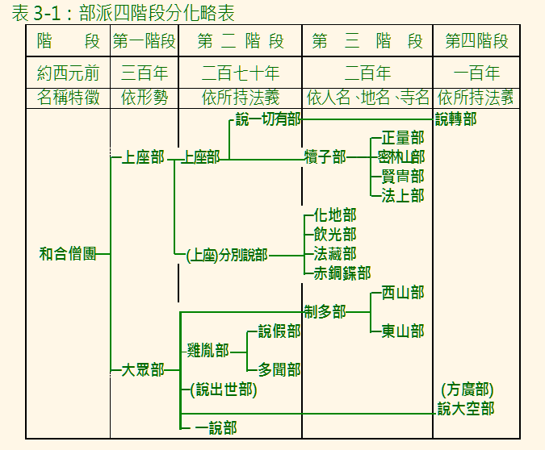
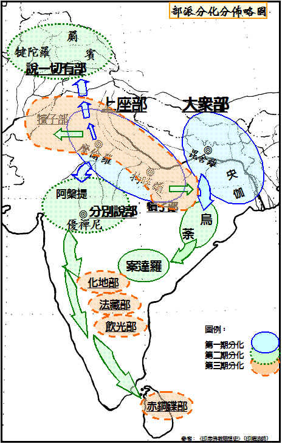

第三章 佛教僧團的分化
總說
毘舍離的僧團，暫時裁決了東、西方對戒律的不同主張。但被議決為非法的東方團體，人數眾多，影響力愈來愈強，終於逐漸不受西方（長老）的約制。於是，原先一味和合的僧團，就分化成西方的「上座部」，與東方的「大眾部」。這是僧團最初分化，也稱為第一階段分化。第一階段分化的時間，目前雖然沒有發現直接的史料記載，但是，仍然有可信的間接史料，作大略地推斷。
西元前二七一年，孔雀王朝的阿育王即位。即位後的九年內，大概是為了王位的鞏固與版圖的擴張，常常在血腥的殺戮之中，所以有「旃陀羅阿育」（黑阿育）的稱號。後來，他崇仰佛教，改變為政風格，干戈，而有「法阿育」之德稱。在《善見律毘婆沙》（《大正大藏經》二四‧六八二上）中記載，阿育王讓自己的兒子摩哂陀，在二十歲時出家，就是以目犍連子帝須為和尚，摩訶提婆（大天）為十戒教授師，末闡提為具足戒教授師，而他們卻是分別屬於「分別說部」、「大眾部」與「說一切有部」等三個不同部派。其中，「分別說部」與「說一切有部」是上座部的進一步分化，是屬於僧團的第二階段分化。所以我們可以推斷：僧團的第二階段分化，不會晚於阿育王時代，而第一階段的分化，當然早於第二階段，但卻不會早於毘舍離七百結集。
僧團的分化，大約一直持續到西元前一世紀初期，大乘佛法萌芽、發展後為止。分化出來的部派，有十八部或二十部之說，實際上，到後來支末的分化，可能還不只這個數量。現在，依印順法師的四階段分法，表列於後︰
表3-1：部派三階段分化略表

圖3-1：部派分化分佈略圖

西元前後，大乘佛教蓬勃發展，逐漸成為當時佛教的主流。但這並不表示分化的各部派就從此消失，事實上，說一切有部在印度西北部，犢子部在印度西部及西南部，大眾部在印度南部，都還繼續活躍著。西元五、六世紀，從說一切有部中的持經譬喻師，發展出來的「經部」，連同犢子部分出的「正量部」，與大乘佛教的「中觀派」與「瑜伽行派」，有等同的份量，被視為佛教的「派別」。至於在南方的斯里蘭卡島，因為受到地理位置上的間隔，印度本土的大乘佛教發展，並未能對其有太多的影響，如其中的「無畏山寺派」，雖接受了大乘佛法，但不久也就沒落了，所以，斯里蘭卡一直是以上座赤銅鍱部；尤其是其中的「大寺派」為其主流。
僧團分化成為各個部派，為了區別，也稱這個時期為「部派佛教」。經典方面，各部派除了擁有自部整編的四《經》外，並且別立第五部，稱為《雜藏》（但「南傳」名為《小部》）。《雜藏》的內容，各部派的出入極大。律典方面，各部派已擁有不同名稱的律典：如赤銅鍱部為《銅鍱律》，大眾部為《摩訶僧祇律》，說一切有部為《十誦律》，法藏部為《四分律》，化地部為《五分律》，根本說一切有部為《毘奈耶》（或稱為《根有律》）。經、律之外，另有論典的成立，這是部派佛教的一個特色。「論」不同於「經」，是對佛法作有系統，綜合貫通地深入討論的。推定各部派，都有奠定自部宗義的根本論書，其中，又以上座部系的赤銅鍱部，與說一切有部最為發達，所留下來的論書最多。而大眾部系的論書資料最少，印順法師推斷，在「大智度論」中所提及的「句勒」，即是大眾部系的根本論書。
赤銅鍱部的論書，較早期的有《法集論》、《分別論》、《界論》、《人論》、《雙論》、《發趣論》、《論事》等七部。西元四、五世紀間，又有以戒、定、慧修行次第為主要內容的《解脫道論》（優波底沙 —— 大光著）與《清淨道論》（覺音著）等兩部重要論書，其風格，有別於一般以法義分別為主的論書，值得重視。
說一切有部的論書，較早期的也有七部，稱為「」。其中，「身」是指《發智論》（迦旃延尼子著），是說一切有部最重要的論典。這部論，促成了說一切有部的發展，也造成說一切有部的分裂。「六足」是指《法蘊足論》、《集異門足論》、《施設足論》、《品類足論》、《界身足論》、《識身足論》等。與赤銅鍱部的樸素論風不同，說一切有部的論風細膩。以《發智論》為中心的研究，發達起來後，產生了許多不同意見的解釋。西元二世紀，綜合各家對《發智論》的解說，纂集成《大毘婆沙論》，使說一切有部的宗義，更趨精密。此後不厭其煩的細密論風，逐漸減退，取而代之的，是精簡扼要，綱舉目張的論風。這類論書，如《味論》（瞿沙著）、《阿毘曇心論》（法勝著）、《阿毘曇心論經》（優波扇多著）、《雜阿毘曇心論》（或稱《雜心論》，法救著）、《五事毘婆沙論》（法救著）、《入阿毘達磨論》（塞建陀羅著）、《俱舍論》（世親著）、《俱舍論實義疏》（安慧著）、《隨相論》（德慧著）、《阿毘達磨順正理論》（或簡稱為《順正理論》，眾賢著）、《阿毘達磨顯宗論》（眾賢著）等。其中以西元四、五世紀的《俱舍論》與《順正理論》最為出色。尤其是《俱舍論》，雖然受到《順正理論》的質疑與評難，但其論義，對說一切有部的觀點，作了全盤的論究而多所評破，對經部的觀點，有所隨順而又不為其所限，出入於阿毘達磨與經部之間，可以說是綜貫了說一切有部與經部；遍及了當時各派，成為一折衷的學派，不但有深厚的哲理基礎，而且有精密的理論，一直到西元七世紀，都還在印度宏傳，始終不衰。
法藏、化地、飲光等上座分別說部，以及犢子系的本末五部，都以《舍利弗阿毘曇論》為根本論典。這部論，在思想與精神上，有隱通大乘的傾向。其中，犢子系的正量部，又有自部的論典，稱為《三彌底部論》。西元二、三世紀間，由「說一切有部」中分出「經部」，而《成實論》（訶黎跋摩 ——師子鎧著）與《四諦論》（婆藪跋摩 ——世冑著）等兩部論書，包含了經部及其末流的思想，尤其是《成實論》論及「若不見諸法體性，名見」、「六波羅蜜具足」，顯然已接受部分大乘思想。所以，其論義雖近於經部，但卻不完全屬於經部，可以說建立了從部派通向大乘的橋樑，而可以視為自成一宗的。
從思想發展史的角度來看，部派佛教論典的發達，為往後佛法多元發展的基礎。